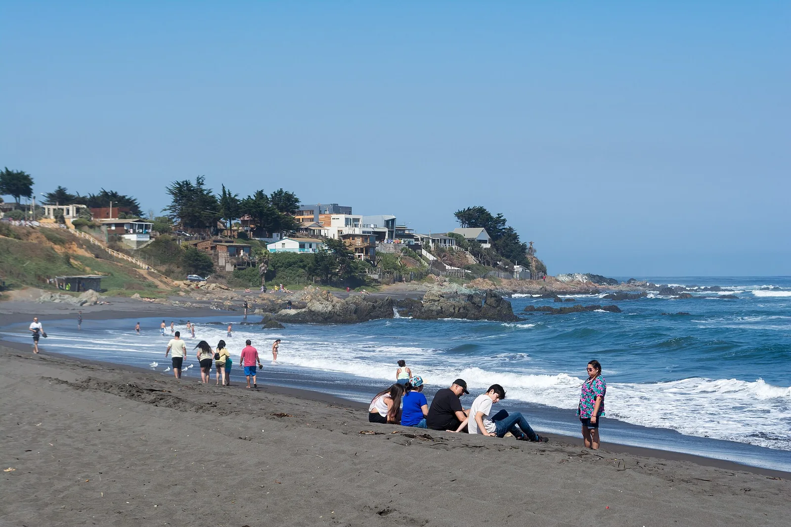

Playa Infiernillo
Pichilemu, Chili · surf

Une plage de Pichilemu, au sud du centre. Une autre étape de surf sur ce rivage du Chili central.
- Lieu
- Pichilemu, Chili
- Niveau
- Variable selon les conditions
- Activités
- surf
- Type d'eau
- Mer / océan
- Coordonnées
- -34.40, -72.02 (position approximative du secteur)
Ouvrir dans Ocean Buddy Télécharger sur l'App Store
Source : Chile Travel.